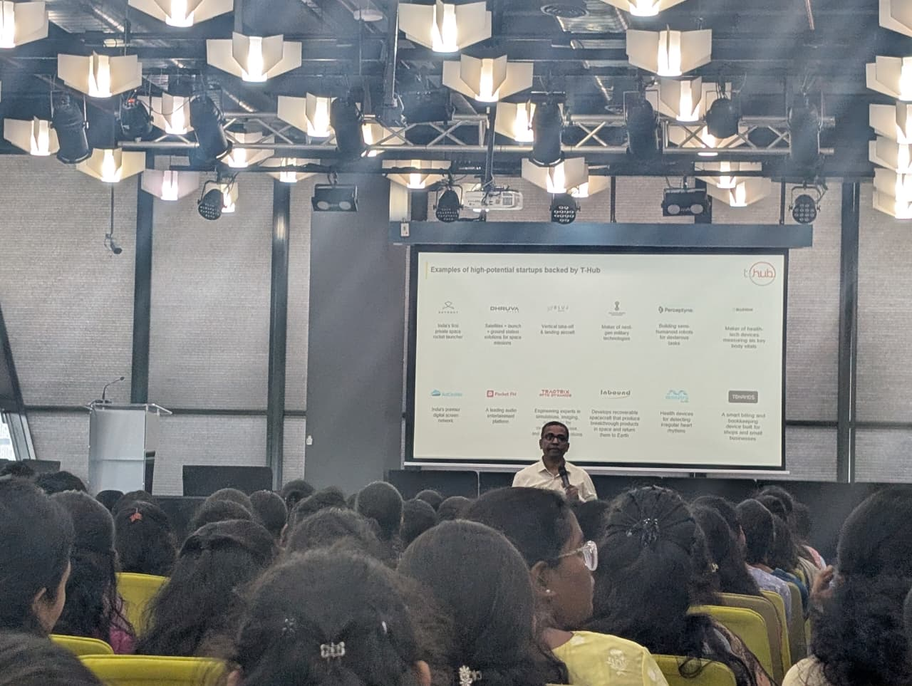

Out Reach
T-Hub Visit(2025)
Review:
The Department organized an Industrial Visit (IV) to T-Hub, Hyderabad, with the objective of providing students with practical exposure to innovation,
entrepreneurship, and industry-oriented learning.
The visit commenced at 9:00 AM, with students and faculty departing from the college campus.
The group reached T-Hub at 10:30 AM, where the participants were warmly welcomed by the T-Hub team. Upon arrival, welcome drinks were served,
creating a pleasant and engaging environment for the students.

The first session was delivered by Mr. Srinivas Rao Mahankali, Vice President of T-Hub. He provided valuable insights into the history, vision, and growth of T-Hub,
explaining its establishment, objectives, and role in fostering startups and innovation. The session was highly interactive, with Mr. Srinivas Rao Mahankali actively
engaging with the students, encouraging them to ask questions and think creatively about entrepreneurship and innovation.
Students from four different colleges—Loyola Academy, Little Flower Degree College, Mahatma Gandhi Institute, and Guru Nanak Institutions—participated in the industrial visit.
All participating colleges were actively involved throughout the event. During the interaction session, students were encouraged to share their startup ideas, and
representatives from each college enthusiastically presented their concepts, leading to productive discussions and knowledge exchange.
 At around 1:00 PM, lunch was provided within the T-Hub office premises. Following lunch, the students were taken on a guided tour of the T-Hub facility, where they
explored each and every floor of the building. During this visit, students interacted with the staff members, gained insights into the working environment, and received
feedback and reviews about the startup ecosystem and professional opportunities available at T-Hub.
At around 1:00 PM, lunch was provided within the T-Hub office premises. Following lunch, the students were taken on a guided tour of the T-Hub facility, where they
explored each and every floor of the building. During this visit, students interacted with the staff members, gained insights into the working environment, and received
feedback and reviews about the startup ecosystem and professional opportunities available at T-Hub.
The Industrial Visit was both educational and enjoyable, offering students firsthand exposure to a dynamic innovation ecosystem while also providing an engaging and memorable
experience. Overall, the visit greatly enhanced the students’ understanding of entrepreneurship, collaboration, and real-world industry practices, making it a highly successful
and enjoyable IV.